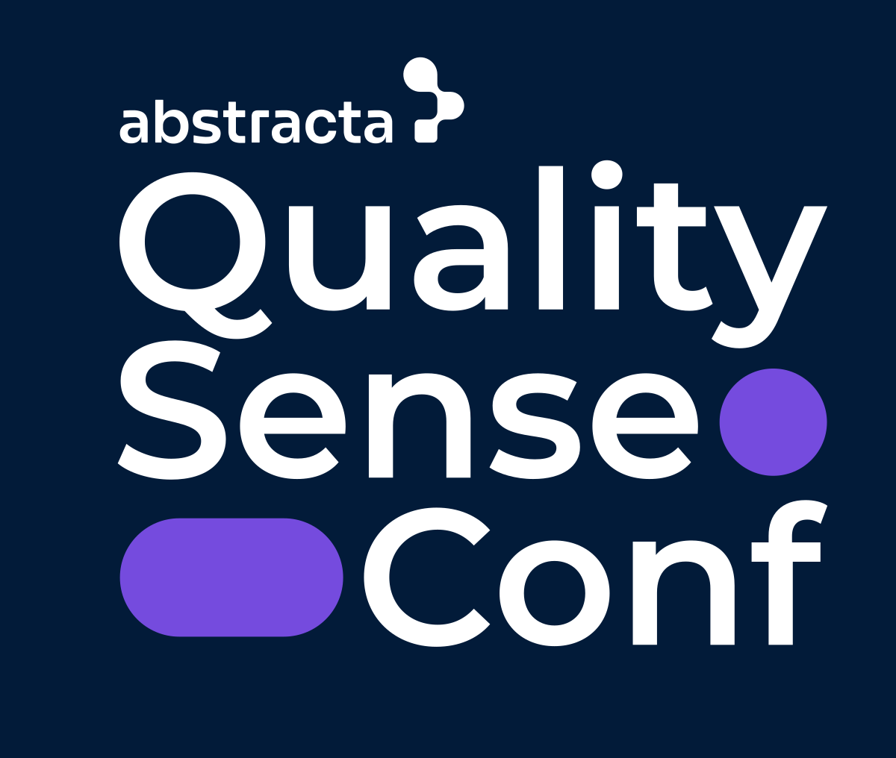
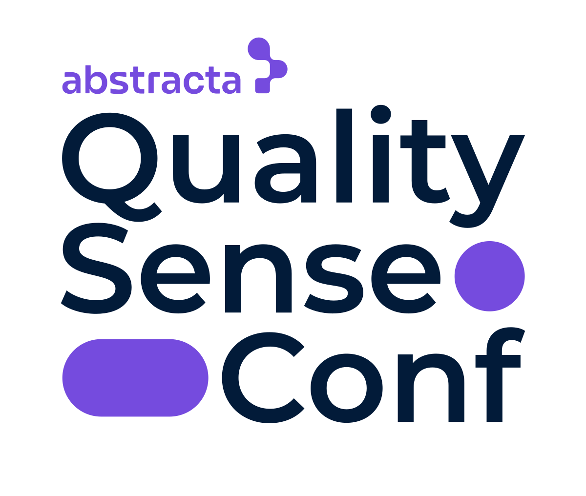
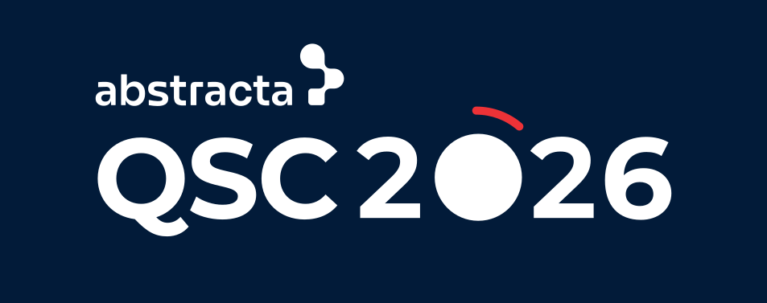
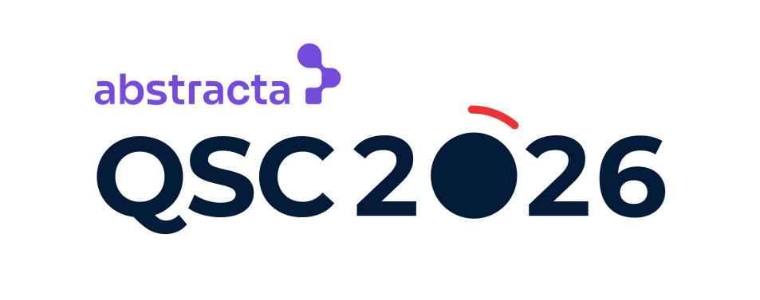

2. Edicion 2026 «positivo» (qsconf-2026-positivo.svg)

fondo blanco
fondo crema
fondo azul oscuro
Todas son versiones del kit oficial, tal cual. Cada una sobre fondo blanco, fondo crema (como el post) y fondo azul oscuro (como el banner).




Decime el numero (1 a 6) y lo aplico en la portada, el post y la presentacion.